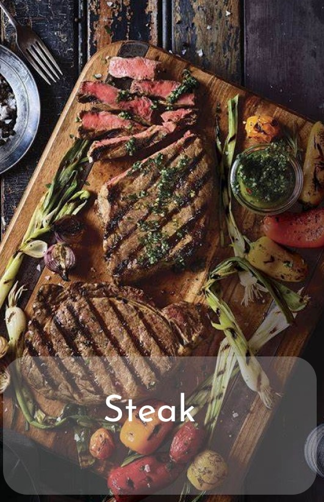

Steak
Ingredients
- 4 boneless, skinless chicken breasts
- Salt and pepper to taste
- 2 tablespoons olive oil
- 2 cloves garlic, minced
- 1 teaspoon dried thyme (or any other preferred herbs)
- 1 teaspoon paprika (optional)
- 2 tablespoons butter
Instructions
- Prepare the chicken: Start by pounding the chicken breasts to an even thickness, about 1/2 to 3/4 inch thick. This ensures even cooking.
- Season the chicken: Season both sides of the chicken breasts with salt, pepper, and any additional herbs or spices you like. Paprika adds a nice color and flavor but feel free to customize to your taste.
- Sear the chicken: Heat olive oil in a large skillet over medium-high heat. Add minced garlic and cook for about 30 seconds until fragrant. Place the seasoned chicken breasts in the skillet and cook for about 5-6 minutes on each side, or until golden brown and cooked through. Cooking time may vary depending on the thickness of your chicken breasts. You can also grill the chicken if you prefer.
- Add butter: Once the chicken is cooked through, add butter to the skillet and let it melt, spooning it over the chicken breasts. This adds richness and flavor.
- Rest and serve: Remove the chicken from the skillet and let it rest for a few minutes before serving. This allows the juices to redistribute and keeps the chicken moist. Serve hot with your favorite sides like mashed potatoes, steamed vegetables, or a salad.